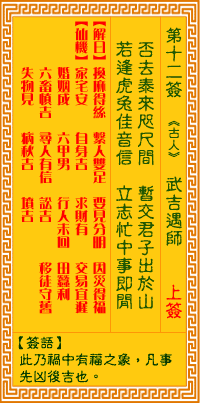

观音灵签第十二签 【武吉遇师】 |
 | |||
时临否极泰当来 抖擞从君出暗埃 若遇卯寅佳信至 管教立志事和谐 |
||||
| 【吉凶】 | 上上签 | 【宫位】 | 寅宫 | |
| 【签语】 | 此卦祸中有福之象，凡事先凶后吉也。 | |||
| 【解曰】 | 换麻得丝 系人双足 要见分明 因祸得福 | |||
| 【仙机】 | 此签家宅安，自身吉，求财有，交易宜迟，婚姻成，六甲男，行人未回，田蚕利，六畜慎吉，寻人有信，讼吉，移徙守旧，失物见，病秋吉，坟吉。 | |||
| 【详解】 | 坏运已经走到了尽头，好运就要来临，请振作精神走出灰暗的阴霾;遇卯寅时自有好消息到来，坚定信念定可顺心和谐。 麻换得丝，是笑虽哭，要见分明，是见为福。此签祸去福来之象，凡事先凶后吉。 时临否极泰当来。多年来之恶运。霉运已去。吉星高照之时。事事顺利。一路顺风。毫无阻碍者。将身上抖之擞之。身上之暗埃尽去。尤在卯寅佳信至时。要之。麻换得丝是笑虽哭。要见分明是见为福。 此签有”勇往直前”之意。鼓励当事人，百折不挠。有时人在遇到阻碍刁难或被拒绝等不如意的情况发生时，便会心生退惧之意，甚至就此放弃。须知成功并非遥不可及，在努力的过程中，必然会面临各式各样的挑战，考验当事者的决心。故事中申包胥为了求得秦国的援兵，连续七昼夜不眠不休，诚意终于感动秦主愿意出兵增援，让楚国不致灭亡。由此可知，凡事除了必须下定决心之外，还要有坚强的意志力与不屈不挠的毅力。不论过程有多艰难困苦，绝勿轻言放弃，朝着目标持续努力，相信成功之日，已经近在眼前了。 | |||
| 【典故】 | 武吉本来是砍柴的樵夫，认识了在胃水旁钓鱼的姜太公（子牙）。后来进城时误杀了人，被捉判死刑，武吉求救于姜太公，太公收他为徒弟并施法解救他。后来武吉被拜为大将，讨伐纣王。《封神榜》故事 | |||